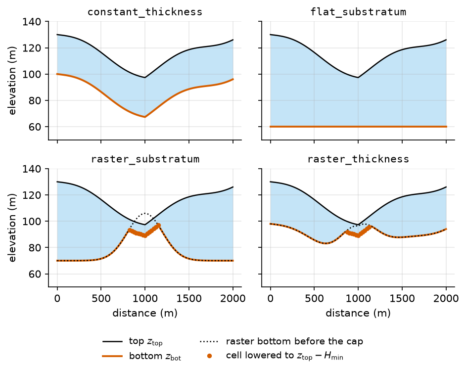
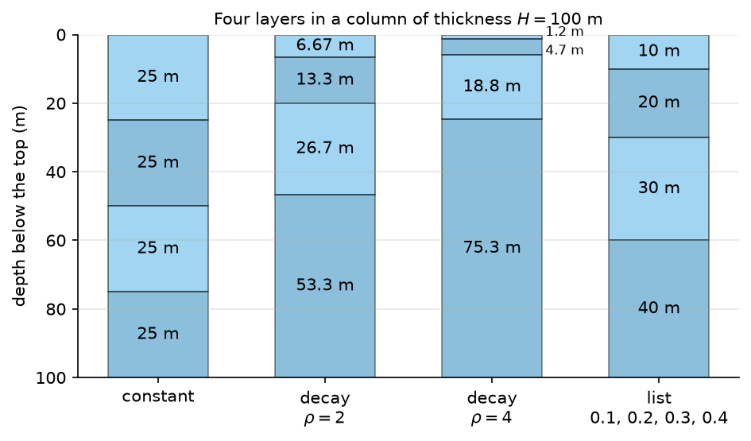
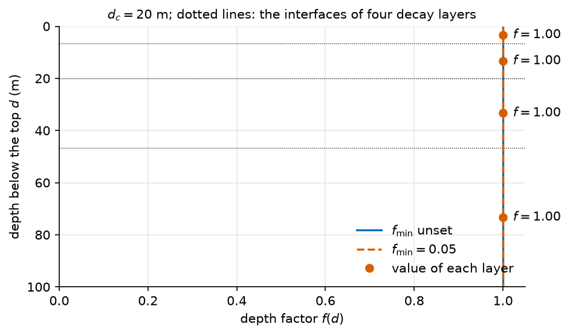
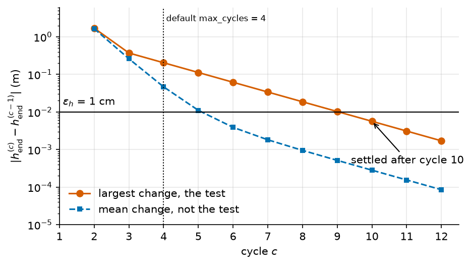

The groundwater flow problem#
What head does the aquifer hold, in every cell and at every time? This page gives the geometry HydroModPy builds for that head, the properties that enter it and the state it starts from. The flow equation itself is MODFLOW’s and is read at its source. For the same subject in plain words, see What HydroModPy does. What each solver supports is listed in Solvers.
Note
Scope. Three solvers read the same [flow] section: MODFLOW 6 (the default),
MODFLOW-NWT and the in-house Boussinesq solver. They solve the same physical
problem and not the same discrete equations. The balance of the two MODFLOW
solvers is in What the solvers solve. The Boussinesq form is on Boussinesq theory.
What enters and leaves the aquifer (recharge, drains, streams, lakes, wells) has
its own pages: Rain and evaporation: the forcing, The daily soil reservoir and How water leaves the aquifer. Where the
one-layer reading stops being true is at the end of Limits.
Notation of this page
Lengths are in meters, time in seconds, and elevation is positive up. A key accepts a value with its unit (“30 m”, “5 m/day”); the code converts it before it builds the solver input. Every symbol of the site is on Notation.
Symbol |
Meaning |
Unit |
Set by |
|---|---|---|---|
\(d\) |
depth below the model top, the variable of the depth factor of a property |
m |
- |
\(\Delta t\) |
length of a stress period, the stretch of time that gets one forcing value |
s |
|
\(\delta t\) |
solver time step, \(\delta t = \Delta t / n_\mathrm{sub}\) |
s |
derived |
\(n_\mathrm{sub}\) |
number of solver time steps in a stress period |
||
\(h\) |
hydraulic head, measured from a fixed datum |
m |
solved, not set |
\(h_0\) |
head at the start of the run |
m |
|
\(z_\mathrm{top}\) |
model top, the land surface |
m |
|
\(z_\mathrm{bot}\) |
bottom of the aquifer |
m |
|
\(H\) |
aquifer thickness, \(H = z_\mathrm{top} - z_\mathrm{bot}\) |
m |
|
\(B\) |
saturated thickness, \(B(h) = \min\bigl(\max(h - z_\mathrm{bot}, 0), H\bigr)\) |
m |
state, not a field |
\(L_h\) |
horizontal length of a flow path, from a divide to the stream that drains it |
m |
derived |
\(H_c\) |
thickness of the constant-thickness model |
m |
|
\(z_s\) |
elevation of the flat substratum |
m |
|
\(Z_r\) |
value of the substratum raster in a cell |
m |
|
\(\zeta\) |
vertical shift of the raster bottom |
m |
|
\(\lambda\) |
factor applied to the thickness raster |
||
\(H_\mathrm{min}\) |
smallest aquifer thickness a raster kind keeps under the top |
m |
|
\(j\) |
layer index, from 1 at the top |
- |
|
\(n_\mathrm{lay}\) |
number of layers |
||
\(p_j\) |
cumulative share of the thickness reached at the bottom of layer \(j\) |
||
\(\rho\) |
ratio of the thicknesses of two successive layers in the |
||
\(K\) |
horizontal hydraulic conductivity, the same along \(x\) and \(y\) |
m/s |
|
\(K_z\) |
vertical hydraulic conductivity, \(K / \beta\), or the parameter with the id |
m/s |
|
\(\beta\) |
ratio \(K / K_z\) |
||
\(S_s\) |
specific storage |
1/m |
|
\(S_y\) |
specific yield |
||
\(f(d)\) |
factor that scales a property with the depth \(d\) below the top |
||
\(d_c\) |
characteristic depth of the exponential depth factor |
m |
|
\(f_\mathrm{min}\) |
floor of the exponential depth factor, none when the key is unset |
||
\(N\) |
recharge rate, positive into the aquifer |
m/s |
|
\(\bar N\) |
recharge averaged over the catchment and a period of time ( |
m/s |
derived |
\(\Phi_{n,p}\) |
flow into cell \(n\) from the stress package \(p\), positive into the aquifer |
m³/s |
|
\(n, m\) |
cell indices; \(\mathcal{N}(n)\) is the set of cells that share a face with \(n\) |
the grid, The mesh |
|
\(a_n\) |
plan area of cell \(n\) |
m² |
the grid |
\(G_{nm}\) |
conductance between cells \(n\) and \(m\) |
m²/s |
derived from \(K\), the geometry and the heads |
\(w_{nm}\) |
width of the face shared by cells \(n\) and \(m\) |
m |
the grid |
\(c_{nm}\) |
distance from the centre of \(n\) to the face it shares with \(m\) |
m |
the grid |
\(\varepsilon_h\) |
head tolerance of the cyclic spin-up |
m |
The domain#
Two surfaces bound the aquifer.
The top \(z_\mathrm{top}\) is the digital elevation model of the catchment,
read from data.dem. By default the grid takes the value of the DEM at the
center of each cell, and nothing else moves the top.
solver.modflow6.sgrid.top_sampling.mode can ask for a statistic over the pixels
of the cell instead, with a lower value for the cells that hold a channel
(6. The top of a cell).
The bottom \(z_\mathrm{bot}\) comes from a depth model, chosen by
domain.depth_model.kind. Four kinds exist:
Kind |
Bottom |
Reads |
|---|---|---|
|
\(z_\mathrm{bot} = z_\mathrm{top} - H_c\) |
|
|
\(z_\mathrm{bot} = z_s\) |
|
|
\(z_\mathrm{bot} = \min\bigl(Z_r + \zeta,\ z_\mathrm{top} - H_\mathrm{min}\bigr)\) |
the raster of |
|
\(z_\mathrm{bot} = \min\bigl(z_\mathrm{top} - \lambda Z_r + \zeta,\ z_\mathrm{top} - H_\mathrm{min}\bigr)\) |
the raster of |
A flat substratum is an elevation, not a depth: where the land surface drops under it, no aquifer is left. A raster kind:
reprojects the raster onto the grid of the top;
refuses the run if one cell of the domain has no raster value, so the raster must cover the whole extent of the domain, buffer included when
geographic.domain_extentis"box";applies \(\lambda\) and \(\zeta\);
lowers the bottom to \(z_\mathrm{top} - H_\mathrm{min}\) wherever it would come closer to the top than that, and logs a warning that counts the cells;
refuses the run if every cell needs that correction, since no aquifer would remain.

Fig. 19 The four depth models on one valley, as build_domain returns them. Look at the
valley floor of the two raster kinds: where the raster bottom (dotted) comes within
\(H_\mathrm{min}\) of the top (8 m here), the cells (dots) are lowered to
\(z_\mathrm{top} - H_\mathrm{min}\).#
Take a top of 120 m everywhere and a raster that holds 40 m, or 85 m for the
elevation kind, in every cell but one. The table gives the bottom of that cell, as
build_domain returns it (the check ran the function).
Depth model |
Raster value |
\(\zeta\), \(\lambda\) |
Bottom |
|---|---|---|---|
|
40 m |
5 m, 1 |
85 m |
|
40 m |
0 m, 2 |
40 m |
|
0.5 m, with \(H_\mathrm{min} = 1\) m |
0 m, 1 |
119 m, with a warning |
|
85 m |
-5 m |
80 m |
A raster kind needs the raster. data.substratum takes exactly one source.
A file that inherits a constant thickness removes it with thickness__delete when
it switches to a raster ([domain],
The grammar of a HydroModPy file).
The thickness of an aquifer is an assumption in this model, not a result. No
equation below estimates it. The field of the constant thickness declares itself
calibrable, in log space. In the code: Domain._build_surfaces.
The solver grid and its layers#
The grid samples \(z_\mathrm{top}\) and \(z_\mathrm{bot}\) at the center of each cell (the cell layout is on The mesh). A cell with no finite value in either surface becomes inactive in every layer. The grid is refused when \(z_\mathrm{bot} \ge z_\mathrm{top}\) on a valid cell. On a triangle or Voronoi mesh, a warning names the columns thicker than 500 m and than 10 times the median: a raster nodata value read as an elevation produces them (9. The checks the code applies).
The thickness is then cut into \(n_\mathrm{lay}\) layers. The bottom of layer \(j\) is
The shares \(p_j\) are the same for every cell. Three rules build them, chosen by
domain.layers.genmtd_lay:
|
\(p_j\) |
|---|---|
|
\(j / n_\mathrm{lay}\) |
|
\((1 - \rho^{j}) / (1 - \rho^{n_\mathrm{lay}})\) |
|
the running sum of |
The decay rule needs \(\rho > 1\), and the file is refused otherwise: the layers
then thicken with depth. With \(\rho = 2\) and four layers they hold 1, 2, 4 and 8
fifteenths of the column, from the top down. A list must sum to 1. With one
layer, \(p_1 = 1\) and the column is one cell. MODFLOW 6 and MODFLOW-NWT both read the table
[domain.layers], so a project has one layering whatever solver runs it. A fourth value,
surfaces, gives the base of each layer instead of a share (Layers by surfaces).

Fig. 21 Four layers in a column of 100 m, from layer_proportions. Look at
the decay columns: the larger \(\rho\), the thinner the top layer and the thicker
the bottom one.#
What the layers can represent. Every layer reuses the planar cells and their
connections. With shares, only the top and the bottom of the column vary from cell to cell,
and geology varies through the properties of each layer and cell (The properties).
With surfaces, the base of each layer varies too, and a layer thinner than its minimum
thickness is pinched out: its cell becomes a vertical pass-through cell, idomain = -1, or
keeps the minimum thickness (Layers by surfaces). A pass-through cell holds no head,
and MODFLOW 6 connects the cells above and below it. A change of the plan from one layer to
the next, or a connection that is not the one of the plan, is not represented. MODFLOW 6
builds every grid, structured or not, as a vertex grid (DISV), never as DISU. The
Boussinesq solver has no layers: it works on one triangle per column. In the
code: layer_proportions, layer_stack.
The properties#
Each property is a field: one value for the whole domain, or one value per zone ([flow.param]). How a zone map becomes one value per cell is on From a zone map to the cells.
Property |
Needed by a steady run |
Needed by a transient run |
|---|---|---|
MODFLOW 6 and MODFLOW-NWT |
\(K\) |
\(K\), \(S_y\), \(S_s\) |
Boussinesq |
\(K\) |
\(K\), \(S_y\) |
The Boussinesq solver reads no \(S_s\). In a steady MODFLOW run, a missing \(S_y\) or \(S_s\) is filled with zero. In a transient run, a missing one stops the run. Example 04 gives the three values, one for the whole catchment:
flow.param.K.field.value in step4_transient.tomlflow.param.K.field.value Hydraulic conductivity m/s valid 1e-14 .. 100 Hydraulic conductivity of the K table, in m/s. form number or "<n> m/s" default not set calibrate log, sampling log_uniform only if kind = "homogeneous" current 5e-05 set by step1_minimal.toml:59
flow.param.Sy.field.value in step4_transient.tomlflow.param.Sy.field.value Specific yield - valid 0.0001 .. 0.5 Specific yield of the Sy table, dimensionless. form number default not set calibrate log, sampling log_uniform only if kind = "homogeneous" current 0.05 set by step1_minimal.toml:65
flow.param.Ss.field.value in step4_transient.tomlflow.param.Ss.field.value Specific storage 1/m valid 1e-12 .. 0.001 Specific storage of the Ss table, in 1/m. form number or "<n> 1/m" default not set calibrate log, sampling log_uniform only if kind = "homogeneous" current 1e-05 set by step4_transient.toml:27
A depth factor. A property can carry a field_vertical_profile. The value
of layer \(j\) in a column is the value of the field times \(f(d_j)\), where \(d_j\) is
the depth of the middle of the layer below \(z_\mathrm{top}\). For
kind = "exponential":
Without min_factor, the
factor has no floor and tends to zero with depth. For kind = "tabulated", the
factor is a linear or stepwise interpolation of the table you give, equal to the
first and last factor outside the table. With one layer, \(d_j\) is half the
thickness: the profile then gives one factor per cell and no variation with
depth. A profile on fewer than five layers is warned about when the file is read. Take a
column of thickness \(H = 2.5\,d_c\) and \(K\) at the middle of each equal layer. One layer gives
a transmissivity off by \(-22\,\%\) to \(+75\,\%\) as the water table goes from the top to
mid-column, three layers by \(-2.8\,\%\) at the top, and five layers by \(-1.0\,\%\).

Fig. 23 The depth factor for \(d_c = 20\) m, from FieldParam.vertical_factor.
Each layer of a four-layer decay column takes the factor at its center (dots), not
an average over its thickness. Look at the deepest layer: without a floor its
factor would be 0.03, with \(f_\mathrm{min} = 0.05\) it stays at 0.05.#
Vertical conductivity. MODFLOW 6 reads \(K_z = K / \beta\), with \(\beta\) the
solver.modflow6.process_specific.vka, layer by layer, so a depth factor on \(K\)
reaches \(K_z\). A parameter with the id Kv replaces it with a conductivity per
cell, and a file that gives Kv and a vka other than 1 is refused. MODFLOW-NWT reads the
same Kv as the vertical conductivity of UPW: the code writes layvka = 0 and vka = Kv,
converted to the time unit of the solver like \(K\). A Kv that is not positive is refused.
The code refuses a \(K\) that is zero, negative or not finite on an active cell. A
heterogeneous \(K\) whose zones do not cover the whole domain produces exactly that.
In the code: FieldParam.vertical_factor.
The conductivity tensor#
The NPF package of MODFLOW 6 reads the tensor by its principal
values, \(K\) along the first axis, K22 along the second and \(K_z\) along the third, and
by three angles [Langevin et al., 2017]. Four parameters complete \(K\) and Kv for it. K22
is the conductivity along the second axis, and MODFLOW 6 takes \(K\) when it is left out.
angle1 turns the first axis from east towards north, counter-clockwise, so it is not a
compass azimuth and N30E reads angle1 = 60. angle2 raises the first axis above the
horizontal, and angle3 turns the tensor about it. All three are in degrees, zero when they
are left out. Each is a [flow.param.<id>] like \(K\), homogeneous or per zone. K22 takes a
vertical profile like \(K\), an angle does not. The parameters reach NPF only when the flow
sets them, so a run without them writes the same files as before. A non-zero angle2 or
angle3 turns XT3D on, because MODFLOW 6 reads these two angles only under XT3D, and so does
a K22 whose axes leave the connections of the mesh
(XT3D on irregular meshes). The file is refused with MODFLOW-NWT or
Boussinesq, which would drop them, and with an angle2 outside \([-90, 90]\) degrees. The run
store keeps \(K_z\) and, when set, K22 and the three angles with the other static properties
(Storage layout).
[flow]
param_list = ["K", "Sy", "K22", "angle1", "angle2"]
[flow.param.K22.field]
kind = "homogeneous"
value = "1e-6 m/s"
[flow.param.angle1.field]
kind = "homogeneous"
value = 30.0
[flow.param.angle2.field]
kind = "homogeneous"
value = 20.0
What the solvers solve#
MODFLOW 6 and MODFLOW-NWT write Darcy’s law and mass conservation for the head in each cell, by control volumes, with one head per cell at its center [Harbaugh, 2005, Langevin et al., 2017]; chapter 2 of Langevin et al. [2017] gives the control-volume form. The derivation is not repeated here. Three pieces of it are used by other pages of this site, so they are written once.
In a catchment the aquifer is mostly unconfined. The head can sit below the top of a cell, and then the thickness that carries flow is the saturated thickness
For a cell \(n\), the balance of one time step is
The left side is the water that enters the cell during the step: the exchange with the neighbors and the stress packages. The right side is the change of the volume stored. \(h^\mathrm{old}\) is the head at the start of the step. This is the one statement of the balance on the site; the solver pages refer to it. Between two cells of a layer, the conductance joins the two half cells in series:
with \(w_{nm}\) the width of the shared face and \(c_{nm}\) the distance from the center of \(n\) to that face. Under the Newton formulation, the series is built with the full cell thicknesses and multiplied by the saturated fraction of the upstream cell ([Langevin et al., 2017]).
What HydroModPy sets:
Every cell is convertible.
icelltype = 1in the MODFLOW 6NPFpackage,iconvert = 1inSTO,laytyp = 1in the MODFLOW-NWTUPWpackage. The specific yield \(S_y\) acts while the water table is inside the cell, and \(S_s\) above the top of a full cell. In example 04, \(S_y = 0.05\) and \(S_s B \le 3 \times 10^{-4}\), a ratio of about 170.No
CELL_AVERAGINGoption. The series average of the equation above is the MODFLOW 6 default.Newton, with under-relaxation, by default. MODFLOW-NWT is the Newton formulation of MODFLOW-2005 [Niswonger et al., 2011], on the same convertible layers and a structured grid. The options and the stopping tests are on The solution: Newton and IMS.
Voronoi faces bisect the centers. That is the case the two-point form of (20) needs. Elsewhere, the XT3D correction is on XT3D on irregular meshes.
The Boussinesq solver writes the same balance on triangles. Its edge flux takes the harmonic mean of \(K\) and the arithmetic mean of \(B\) of the two cells, and its storage has no \(S_s\). See Boussinesq theory.
The smoothing of \(B\) near the bottom of a cell is on The solvers of the aquifer.
Time#
The run is cut into stress periods of length \(\Delta t\), one per forcing value
(Rain and evaporation: the forcing). Within a period the forcing is constant. Each period is cut into
\(n_\mathrm{sub}\) equal time steps \(\delta t = \Delta t / n_\mathrm{sub}\), and the
time integration is the backward Euler scheme of [Langevin et al., 2017]:
(19) is written with the stress and the conductances at the end
of the step. The time step multiplier is 1, so the steps of a period are equal.
The one exception is solver.modflow6.runtime.mf6_ats: with it, MODFLOW 6 may cut a
transient step further where the solver does not converge, never above the step
asked for. The Boussinesq solver takes one step per period.
The solver time step is a numerical choice: a period solved in one step differs from the same period in several. Time steps gives the size of that difference on a test case.
flow.flow_regime picks the regime. A steady run is one steady period
over the whole [simulation.time] window, whatever step the file writes. In a
transient run, flow.first_period_steady marks the first
period as steady, in the three solvers. In a steady period the right side
of the balance is zero, the storage plays no part, and the heads settle where the
forcing of that period puts them. Example 04 states the regime:
flow.flow_regime in step4_transient.tomlflow.flow_regime Whether the flow is solved as one equilibrium state or through time over the stress periods of [simulation.time]. form "steady" | "transient" default "transient" value "steady" Solves one equilibrium state, with no storage term: one stress period over the whole [simulation.time] window, whatever its step_value says, with the forcings averaged over the window. value "transient" Solves the heads through time; it starts from the state [flow.ic] gives. current "transient" set by step4_transient.toml:20
In the code: sto_period_settings.
A long run in windows#
A long transient run can be cut into windows, and Long transient runs in windows
gives the commands. Each window is a run of its own, sealed with its own final_state/, and
window \(k\) starts from the final state of window \(k-1\). A window edge must fall on the end of a stress period, because a period cut in two would be
another problem than the one the run in one piece solves.
A chain is meant to give the same heads as the run in one piece, and it does when the state that passes from one window to the next is not changed on the way. I measured it on a transient MODFLOW 6 model of twelve monthly periods, five time steps each, on a grid of 25 by 25 convertible cells, with a variable recharge and a constant head on one edge, cut after six periods. The first window always equals the start of the run in one piece to the last bit. The second window differs from the end of the run in one piece by the size the start head was written at.
Start head of window 2 |
Newton |
Largest difference, window 2 |
|---|---|---|
text, as FloPy writes it |
no |
1.13e-9 m |
text, as FloPy writes it |
yes |
1.14e-9 m |
binary, float64 |
no |
none, equal to the bit |
binary, float64 |
yes |
none, equal to the bit |
HydroModPy reads final_state/ in float64 and gives the head to MODFLOW 6 as a binary array of
float64, so a chain of windows equals the run in one piece to the last bit. A lake stage is written
with all its digits for the same reason. On a lake linked to the cells below it, a window that
started again from initial_stage was 2.3e-2 m away in head and 3.6e-2 m in stage after six
months, a stage written with eight decimals was 1.3e-9 m and 2.1e-9 m away, and a stage written
with all its digits was equal to the bit.
One case stays short of the last bit. With SFR and its STORAGE option, final_state/ also
keeps the stage of each reach and the next window gives it to MODFLOW 6 as INITIALSTAGES.
Without it window 2 is 1.0e-4 m away in head and 1.0e-7 m in stage. With it the difference is
6.4e-10 m in head and 9.0e-13 m in stage. MODFLOW 6 keeps a routing state of the reach beyond its
stage, and nothing reads that state again. Writing the stage with 17 digits gives the same
difference, so it does not come from the text.
The starting heads of a computed start (steady_state and spinup_cyclic) are those of the run
in one piece, and they apply to window 1 only. flow.restart_from is the start of window 1.
The soil reservoir runs on the whole simulation, and each window takes its own periods of that
run (The daily soil reservoir).
The starting heads#
The head at the start of the run, \(h_0\), is declared in the flat table [flow.ic].
Its value is the same in every layer of a column. bottom is the bottom of the
deepest layer.
|
\(h_0\) |
|---|---|
|
\(z_\mathrm{top}\) |
|
\(z_\mathrm{top} - v\), with \(v\) the |
|
\(z_{\mathrm{bot},n_\mathrm{lay}}\) |
|
\(v\) |
|
the solution \(h^\star\) of the steady problem under a constant recharge, see below |
|
the state a cyclic run settles at, see below |
In every case, a cell on an imposed head (an ocean, a stream or a side boundary)
starts at that head. top is a full aquifer; the card of flow.ic.h.kind
gives the default.
The solver does not read this table. prepare_solver turns it into one initial
state of the frozen Model, and the backend builds its start heads from that state.
The auxiliary solves below are two variants of the Model: steady_variant for
steady_state, and cycle_variant for each cycle of spinup_cyclic. A variant
is a new object, so the Model of the run is never changed.
The equilibrium. For steady_state, the code first solves an auxiliary
steady problem with the same solver, the same grid and the same properties. It
starts from the top, whatever the backend, and steady_variant gives it the constant
recharge and a single steady period. Its
recharge is a constant, set by flow.ic.h.source: the time mean of the
record, each period by its length, or the rate that you state. The result is \(h_0\):
where \(\bar N\) is the constant recharge and \(q_\mathrm{bc}\) the exchanges with
the boundaries per unit area, held at the value of the first period
(flow.ic.h.boundary_condition_policy).
The settled cycle. For spinup_cyclic, the run repeats its own period. Cycle
\(c + 1\) starts from the heads where cycle \(c\) ended, \(h_\mathrm{end}^{(c)}\), and
the first cycle starts from flow.ic.h.first_cycle_from. cycle_variant hands
the end heads of cycle \(c\) to cycle \(c + 1\) as its start. The loop stops when
with \(\varepsilon_h\) the flow.ic.h.tol_head, or after
flow.ic.h.max_cycles cycles. The maximum counts every cell, not the mean.

Fig. 25 The stopping test of (21), applied by cycles_have_settled to 200
cells of which 10 drift slowly. Look at the two curves: the mean change falls under
\(\varepsilon_h\) at cycle 6, the largest change only at cycle 10, and
the largest change decides. With the default of 4 cycles, this loop would stop
before it settles.#
When the first period is steady. With flow.first_period_steady at its
default, period 0 is solved as a steady state, and the heads above are only the
first guess of that solve. They change the convergence and not the state reached.
To make the run start from a state you choose, set it to false (see
[flow.ic]).
A run can also restart from the last time step of an earlier run
(flow.restart_from). That state replaces \(h_0\). In the code:
build_head_initial_condition_array.
Starts the file refuses. The cycle carries the heads. It does not carry the stage of a lake, which
starts again from its initial_stage at each cycle, so a file with a lake and a spinup_cyclic start
is refused when it is read. hmp spinup carries both from one cycle to the next. Start from its
result with flow.restart_from. That key beside a steady_state or a spinup_cyclic start is
refused too, because the computed start would replace the restart without a message. The auxiliary
steady solve of steady_state can leave heads that did not converge. A transport run that follows
such a start stops with SolverDivergedError, since particles and solutes would follow a head field
that is not a solution. The soil reservoir has a start of its own, and the two starts can come from
two windows. The starting state says when that is wanted.
What enters and leaves#
The stress terms \(\Phi_{n,p}\) of the balance come from packages. Each one has its page.
Term |
MODFLOW 6 package |
Page |
|---|---|---|
Recharge \(N\) |
|
|
Evapotranspiration that the soil did not meet, or a negative recharge routed to evaporation |
|
|
Drainage at the land surface |
|
|
Imposed heads: ocean, stream, sides |
|
|
Wells |
|
|
Stream reaches, lakes, flow barriers, water transfers |
|
Recharge and injection are positive when water enters the aquifer, and a well with
a negative rate pumps. Where no boundary is activated, the edge of the domain
carries no flow. A boundary or a sink is active when its table is declared, under
flow.bc.<name> or [flow.sinks_sources], and enabled = false keeps the table
and switches it off.
Limits#
Shallow and unconfined. Every cell is convertible. The code is built for the saturated zone of a catchment, from the surface down to a substratum that you place. The thickness is chosen, not computed.
No unsaturated flow. The code builds no
UZFpackage. The water that reaches the water table is a recharge, given or computed by the daily soil store of The daily soil reservoir.No density-dependent flow, no compaction, no delayed yield. The code builds neither a
BUYnor aCSUBpackage, and the specific yield releases its water at once.Constant forcing, impervious edges. The forcing is constant over a stress period. The bottom and the sides of the domain are impervious, except where a boundary is activated.
A bottom above the top is refused. So is a bottom that equals it, and a raster that leaves one cell without a value.
Only layers by surfaces pinch out. Shares give every cell the same proportions, so no layer reaches zero thickness, and the thickness cannot fall below \(H_\mathrm{min}\) with a raster kind. The thickness of a layer by surfaces is an input and is not calibrable.
Boussinesq has one layer and no \(S_s\). It reads \(K\) and \(S_y\) only.
Newton and rewetting exclude each other in MODFLOW 6.
A transient run with the soil reservoir refuses a steady first period. The reservoir sends a daily recharge that is zero after a dry day, and a one-period steady state would start the run from a drained aquifer.
Each solver has its own boundaries. What each solver supports is listed in Solvers, and the file is refused when the solver cannot carry a boundary it asks for.
Where the one-layer reading stops#
A model with one layer, and the Boussinesq solver always, are Dupuit by construction: the flow is horizontal and the head does not vary with depth [Brutsaert, 2005, Dupuit, 1863]. Over a flow path of length \(L_h\) through a saturated thickness \(B\), the vertical head difference against the horizontal one scales as \(\beta\,(B / L_h)^2\), an order of magnitude without prefactor. With \(B = 30\) m and \(\beta = 10\), that is 0.036 under hillslopes of 500 m and 0.9 under hillslopes of 100 m, where Dupuit no longer holds. Within about \(B\sqrt{\beta}\) of a stream (100 m here, one or two cells of a 75 m grid), the flow converges and bends upwards. A one-layer model leaves that resistance to the conductance of the drain or of the stream cell (How water leaves the aquifer).
The water table follows the topography, and the drains carry much of the outflow, when the criterion of Haitjema and Mitchell-Bruker [2005] exceeds 1. It compares the recharge, times the squared distance between streams, with the conductivity, the thickness and the largest rise of the land above the streams, and it assumes a uniform recharge and thickness. Below 1, the drains act along the streams only.
HydroModPy has no seepage face below the top of a cell. The drains of the top
layer and the surface closures of the Boussinesq solver take the water at the cell
top, and a stream imposed as a head fixes the head of the whole cell. With
domain.layers.nlay above 1 and a ratio
solver.modflow6.process_specific.vka, MODFLOW 6 and MODFLOW-NWT carry one head per
layer, so the vertical resistance enters the solution. The code computes none of
these ratios and refuses no model for its aspect ratio. A depth factor
((17)) shortens the effective thickness.
Parameters of this page#
The fields below are the ones that appear in the equations. Open a row for its card.
Checked by#
The tests that import the code of this page. The box is generated: a new test appears here on the next build.
168 test files import hydromodpy.model.flow, hydromodpy.model.model, hydromodpy.model.flow_config, hydromodpy.model.domain, hydromodpy.model.properties.field_param, hydromodpy.model.properties.property_table, hydromodpy.solver.modflow_grid, hydromodpy.model.initial.state, hydromodpy.model.initial.heads, hydromodpy.model.initial_config, hydromodpy.solver.modflow6.build, hydromodpy.solver.modflow_nwt.nwt. Their names say what they check.
validation: 1
integration: 10
- Worker. domain
- A lake over a pinched layer solves in modflow6. solver
- A pinched layer solves in modflow6. solver
- Modflow6 rerun matches a build. solver
- Modflow6 flow barrier hfb.
- Modflow6 head calibration disv.
- Modflow6 lake piecewise forcing.
- Modflow6 two lake sill.
- Soil recharge mf6.
- Two lake voronoi stack e2e.
ports: 1
- Solver.
unit: 156
- Surfaces. architecture
- Metrics solver extract. calibration
- Optim parameters. calibration
- Parameter resolution. calibration
- Protocols boilerplate. calibration
- Runners cli runner. calibration
- Runners kept solves. calibration
- Runners prepared model. calibration
- Runners trial. calibration
- Targets. calibration
- Channel tree. catchment/drainage
- Pipeline. catchment/preprocess
- Config refusals. config
- Generated toml. config
- Native flow config. config
- Schema export. config
- Field param config. core/config_kit
- Config. core/site
- Types. core/units
- Launcher run id setup. launchers
- Structure updaters. launchers
- Tessellation. mesh/engines/voronoi
- Geology contacts. mesh/planning
- Boundary condition registry. model/boundaries
- Lake forcing. model/boundaries
- Build. model/domain
- Cell column. model/domain
- Domain. model/domain
- Domain config. model/domain
- Geometry. model/domain
- Job inputs. model/domain
- Lake bed abacus. model/domain
- Lake bed regrid. model/domain
- Layering. model/domain
- Layers config. model/domain
- Spatial support. model/domain
- Spatial support config. model/domain
- Structure binders. model/domain
- Support fields. model/domain
- Native. model/forcing
- Recharge through solvers. model/forcing
- Soil config. model/forcing
- Heads. model/initial
- State. model/initial
- Steady initial condition rate. model/initial
- Field param. model/properties
- Field param io. model/properties
- Geology field. model/properties
- Raster cells. model/properties
- Vertical profile. model/properties
- Zone fractions. model/properties
- Flow. model
- Flow config. model
- Initial config. model
- Model. model
- Supports. model
- Api. project
- Spinup. project
- Prior state. results
- Request identity. results
- Process descriptions. schema
- Cleanup. solver/base
- Drain conductance. solver/base
- Observables. solver/base
- Rerun. solver/base
- Common. solver/boussinesq/forcing
- Adapter. solver/boussinesq
- Boussinesq. solver/boussinesq
- Boussinesq more. solver/boussinesq
- Flow to boussinesq adapter. solver/boussinesq
- Mesh. solver/boussinesq
- Solver. solver/boussinesq
- Transient. solver/boussinesq
- Adapter. solver/linear_reservoir
- Api runner. solver/modflow6
- Boundary roles. solver/modflow6
- Build. solver/modflow6
- Build descent. solver/modflow6
- Computational top grid. solver/modflow6
- Cutoff wall shore. solver/modflow6
- Evt extinction depth. solver/modflow6
- Flow barrier. solver/modflow6
- Initial conditions. solver/modflow6
- K tensor. solver/modflow6
- Lake and sfr rates. solver/modflow6
- Lake bed carve. solver/modflow6
- Lake outlets. solver/modflow6
- Lake pass through cells. solver/modflow6
- Layer stack round trip. solver/modflow6
- Listing path. solver/modflow6
- Modflow6. solver/modflow6
- Modflow6 boundary chd. solver/modflow6
- Modflow6 build inputs. solver/modflow6
- Modflow6 disv grid origin. solver/modflow6
- Modflow6 evt. solver/modflow6
- Modflow6 flow property sidecar. solver/modflow6
- Modflow6 idomain. solver/modflow6
- Modflow6 lake. solver/modflow6
- Modflow6 lake cells. solver/modflow6
- Modflow6 lake outflow. solver/modflow6
- Modflow6 lake restart stage. solver/modflow6
- Modflow6 lake voronoi grid. solver/modflow6
- Modflow6 prt contracts. solver/modflow6
- Modflow6 recharge. solver/modflow6
- Modflow6 voronoi dual support. solver/modflow6
- Modflow6 xt3d rewet options. solver/modflow6
- Modflow executables. solver/modflow6
- One basin per build. solver/modflow6
- Rerun. solver/modflow6
- Run. solver/modflow6
- Sfr. solver/modflow6
- Sfr network. solver/modflow6
- Shared lake cells. solver/modflow6
- Steady initial conditions. solver/modflow6
- Time series. solver/modflow6
- Xt3d advisor. solver/modflow6
- Catchment basin. solver/modflow_common
- Flow directions. solver/modflow_common
- Flow run. solver/modflow_common
- Property mapping. solver/modflow_common
- Runtime arrays. solver/modflow_common
- Sink mask. solver/modflow_common
- Discretization spatial. solver/modflow_grid
- Discretization temporal. solver/modflow_grid
- Sgrid config. solver/modflow_grid
- Solver mesh. solver/modflow_grid
- Flow. solver/modflow_nwt/extractors
- Resolvers. solver/modflow_nwt/modpath
- Chd. solver/modflow_nwt/nwt/payloads
- Recharge etp. solver/modflow_nwt/nwt/payloads
- Well drainage. solver/modflow_nwt/nwt/payloads
- Flow to modflow adapter. solver/modflow_nwt
- Modflow config. solver/modflow_nwt
- Modflow domain surfaces. solver/modflow_nwt
- Nwt budget catchment. solver/modflow_nwt
- Nwt descent. solver/modflow_nwt
- Nwt solver. solver/modflow_nwt
- Pre processing. solver/modflow_nwt
- Pre processing budget unit. solver/modflow_nwt
- Property mapping spatial support. solver/modflow_nwt
- Boussinesq drain bed thickness. solver
- Disconnected active cells are reported. solver
- First clim. solver
- Flow adapters. solver
- Flow config. solver
- Modflow6 time units. solver
- Period steps. solver
- Run field demo. tools/cases/field
- Validation runtime. validation
- Dispatch. workflow/steps/prepare_solver
- Model. workflow/steps/prepare_solver
- Prepare. workflow/steps/prepare_solver
- Restart. workflow/steps/prepare_solver
- Data. workflow/steps
- Export. workflow/steps
- Run outputs. workflow/steps
In the code#
What |
Where |
|---|---|
The top, the bottom and the raster depth models |
|
Reading the substratum raster |
|
Layers, the check bottom below top |
|
The properties, per cell and per layer |
|
The depth factor |
|
The MODFLOW 6 balance: |
|
The MODFLOW-NWT balance: |
|
Steady and transient periods |
|
The Model a solver reads, and its variants |
|
The windows of a chain |
|
The starting heads |
|
See also#
The solvers of the aquifer: what each solver adds to this problem, and how MODFLOW 6 and MODFLOW-NWT differ.
Boussinesq theory: the in-house solver in full.
[flow.ic]: the keys of the starting state.